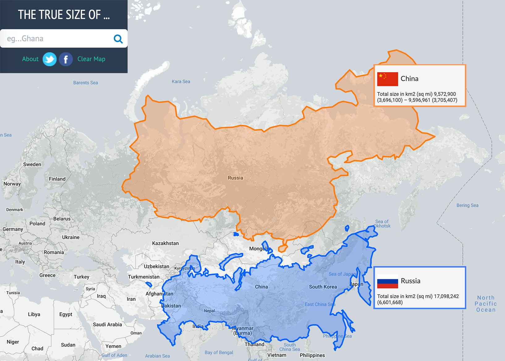
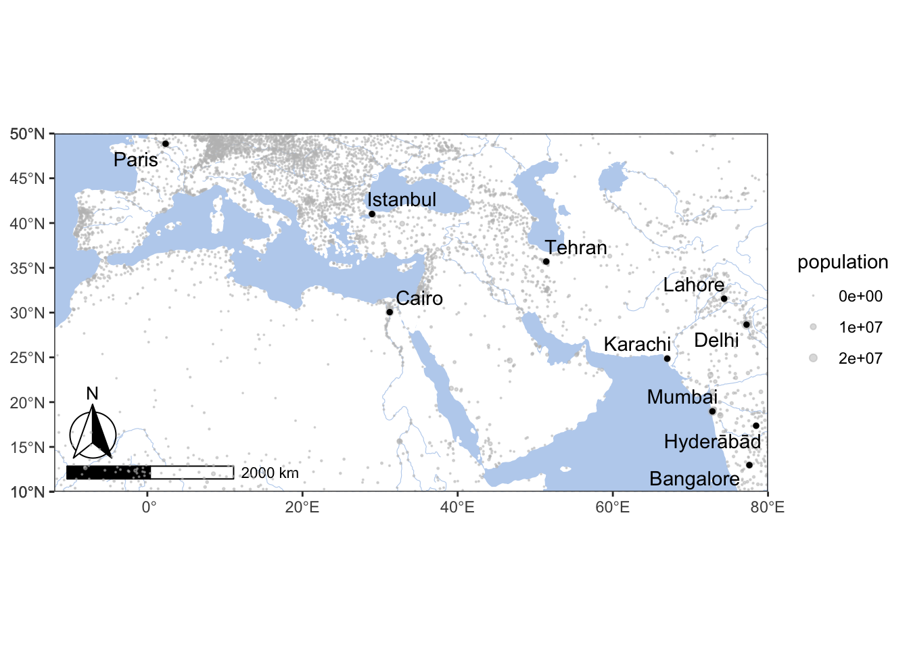
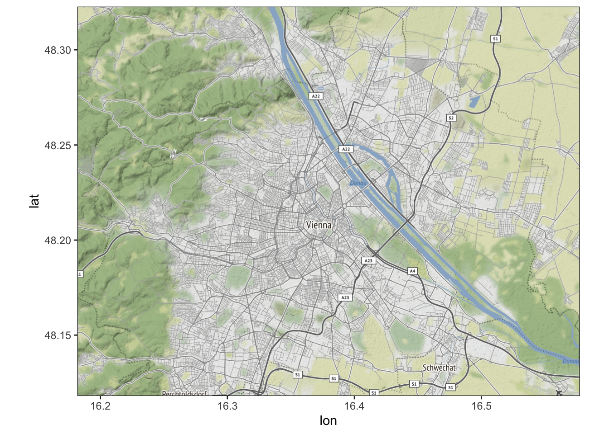

8 L08: GIS II
8.1 Creating Base Maps
A base map is the foundational layer of your map with necessary contextual information. It provides coontext for additional layers—those with analytical information—that are added on top of the base map. Most commonly, base maps provide location references for features that do not change often like shorelines, boundaries, rivers, lakes, roads.
8.1.1 Goals
- To practice building base maps.
8.1.2 Software
- R
8.2 Core concepts and their practical implementations
8.2.1 Projection Issues

See, https://en.wikipedia.org/wiki/List_of_map_projections.
Website https://thetruesize.com/ is a nice tool for demonstrating how projection affects our perceprion of reality. On te following two screenshots you can see how the “sizes” of Russia (~17,1 mln km2) and China (c. 9,6 mln. km2) change when they change places.


8.2.2 A Digital Map: Layers of Goodness

- Layers:
- Analytical Layer
- Our Data
- Annotation/Legend
- Social Geography
- Political Boundaries
- Settlements, etc.
- Physical Geography
- Types of surface (raster)
- Continents / Coastal Line
- Elevation profile (raster)
- Rivers, Lakes, etc.
- Base Layer: Graticule
8.2.3 Main Types of Data: Points, Lines, Polygons
SOURCE: There are 3 types of vector objects: points, lines or polygons. Each object type has a different structure. Image Source: Colin Williams (NEON), via: www.earthdatascience.org
Analytical Layers:
- Our Data
- Points:
- item1, x[1], point(lat, lon)[2]; item2, x[1], point(lat, lon)[2]; item3, x[1], point(lat, lon)[2]; … itemX, x[1], point(lat, lon)[2];
- Lines:
- line1, x[1], {from(lat, lon)[2], to(lat, lon); from(lat, lon)[2], to(lat, lon); from(lat, lon)[2], to(lat, lon); … from(lat, lon)[2], to(lat, lon);}[2] … lineX …
- Polygons:
- polygon1, x, area(lat1, lon1; lat2, lon2; … latX, lonX; … lat1, lon1)[2] … polygonX …
- Points:
- Annotation/Legend
- Our Data
[1] where x is a categorical parameter; [2] lat/lon: decimal coordinates (not DMS)
8.3 Base maps
Base map is essentially the foundation map on which you will be adding data that you want to analyze. It is good to have the base map put together and ready for reuse.
8.3.1 Getting some libraries
install.packages(c("ggplot2", "ggrepel", "ggspatial", "libwgeom", "sf", "rnaturalearth", "rnaturalearthdata", "rgdal"))8.3.2 Creating the Base Map
library(tidyverse)
library(sf)## Linking to GEOS 3.8.1, GDAL 3.1.4, PROJ 6.3.1Let’s load the first base layer of geographical data:
library(rnaturalearth)
library(rnaturalearthdata)
world <- ne_countries(scale = "medium", returnclass = "sf")So, here is our base map. Something is missing…
theme_set(theme_bw())
xlim=c(-12,80); ylim=c(10,50)
ggplot(data = world) +
geom_sf(fill="white", color="white") +
coord_sf(xlim = xlim, ylim = ylim, expand = FALSE) +
theme(panel.background = element_rect(fill = "grey90"))Let’s try to add rivers… and the Aral Sea, which almost completely disappeared in the past 40 years of so. For this, we will need to get relevant data files—most likely in shape format used in GIS applications like ArcGIS and QGIS. Googling usually works for finding relevant data. Files for the Aral Sea: http://www.marineregions.org/gazetteer.php?p=details&id=4281. Working with shape files is a bit tricky and we need some extra steps to convert shape files into something that R understands, namely, dataframes.
library(rgdal) # R wrapper around GDAL/OGR
library(ggmap) # for fortifying shapefiles (converting GIS files into data frames)NB: ggmap is a versetile library that brings additional geospatial capabilities to ggplot, but also has a number of its own functions useful for geospatial analysis. For example, its function fortify() converts GIS data (*.shp files) into data frames with which R works. Additionally, it allows you to pull base maps from such providers as Google, Stamen, and Open Street Maps (for more details, see: https://github.com/dkahle/ggmap).
Now, let’s read in the shapefile, using the path to the shapefile and the shapefile name minus the extension as arguments. Keep in mind, that the first argument—the path—should not have the trailing /. (See, readOGR)
First, download the following two files and unzip them (change paths to files if necessary!):
# Rivers
rivers <- readOGR("./data_temp/layer.riverData", "ne_50m_rivers_lake_centerlines")## OGR data source with driver: ESRI Shapefile
## Source: "/Users/romanovienna/Dropbox/6_Teaching_New/_rgis_course/rgis_univie2021_draft/data_temp/layer.riverData", layer: "ne_50m_rivers_lake_centerlines"
## with 462 features
## It has 32 fields
## Integer64 fields read as strings: ne_idrivers_df <- fortify(rivers)
# adding the Aral sea -- historical basin
aral_sea <- readOGR("./data_temp/layer.aral_sea", "worldglwd1")## OGR data source with driver: ESRI Shapefile
## Source: "/Users/romanovienna/Dropbox/6_Teaching_New/_rgis_course/rgis_univie2021_draft/data_temp/layer.aral_sea", layer: "worldglwd1"
## with 1 features
## It has 28 fieldsaral_sea_df <- fortify(aral_sea)Let’s try to save these as rData objects (*.rds) and load them, instead of preprocessing shape files everytime, which may take a while. Loading RDS files is just a jiffy. Keep in mind, that you can save any data into RDS file! This might be particularly valuable for storing intermediate results that you do not want to regenerate too often.
RDSfolder = "./data_temp/map.objects/"
saveRDS(rivers_df, paste0(RDSfolder,"rivers_df.rds"))
saveRDS(aral_sea_df, paste0(RDSfolder,"aral_sea_df.rds"))
rivers_df <- readRDS(paste0(RDSfolder,"rivers_df.rds"))
aral_sea_df <- readRDS(paste0(RDSfolder,"aral_sea_df.rds"))You can now comment out code in shape_data chunk and saveRDS() lines in RDS_files chunk. The entire script will work much faster this way.
waterColor = "lightsteelblue2" # "grey90"
xlim=c(-12,80); ylim=c(10,50)
ggplot(data = world) +
geom_sf(fill="white", color="white") +
# rivers and the aral sea
geom_path(data = rivers_df,aes(x = long, y = lat, group = group), color = waterColor, size = .2) +
geom_polygon(data = aral_sea_df,aes(x = long, y = lat, group = group), color = waterColor, fill = waterColor, size = .2) +
# map limits and theme
coord_sf(xlim = xlim, ylim = ylim, expand = FALSE) +
theme(panel.background = element_rect(fill = waterColor))
Let’s add a scale bar. This we can do with the library ggspatial (location parameters are as follows: tl, tr, bl and br — for top left, top right, bottom left, and bottom right).
library("ggspatial")## Warning: package 'ggspatial' was built under R version 4.0.2xlim=c(-12,80); ylim=c(10,50)
ggplot(data = world) +
geom_sf(fill="white", color="white") +
# rivers and the aral sea
geom_path(data = rivers_df,aes(x = long, y = lat, group = group), color = waterColor, size = .2) +
geom_polygon(data = aral_sea_df,aes(x = long, y = lat, group = group), color = waterColor, fill = waterColor, size = .2) +
# annotation scale
annotation_scale(location = "bl", width_hint = 0.25) +
annotation_north_arrow(location = "bl", which_north = "true",
pad_x = unit(0.0, "in"), pad_y = unit(0.2, "in"),
style = north_arrow_fancy_orienteering) +
# map limits and theme
coord_sf(xlim = xlim, ylim = ylim, expand = FALSE) +
theme(panel.background = element_rect(fill = waterColor),
axis.title.y=element_blank(),
axis.title.x=element_blank())For convenience, some of this information can be stored into variables for easy reuse:
baseplot <- ggplot(data = world) +
geom_sf(fill="white", color="white") +
# rivers and the aral sea
geom_path(data = rivers_df,aes(x = long, y = lat, group = group), color = waterColor, size = .2) +
geom_polygon(data = aral_sea_df,aes(x = long, y = lat, group = group), color = waterColor, fill = waterColor, size = .2) +
# annotation scale
annotation_scale(location = "bl", width_hint = 0.25) +
annotation_north_arrow(location = "bl", which_north = "true",
pad_x = unit(0.0, "in"), pad_y = unit(0.2, "in"),
style = north_arrow_fancy_orienteering) +
# map limits and theme
coord_sf(xlim = xlim, ylim = ylim, expand = FALSE)
themeParameters <- theme(panel.background = element_rect(fill = waterColor),
axis.title.y=element_blank(),
axis.title.x=element_blank(),
panel.grid.major = element_line(color = waterColor, linetype = "dotted", size = 0.5))Now we can build the same map with just this:
baseplot + themeParametersLet’s add some data. You can download this dataset with cities of the world.
library(ggrepel)
library(readr)
worldcities <- read_csv("files/L11_worldcities.csv")
# xlim=c(-12,80); ylim=c(10,50)
wc_filtered <- worldcities %>%
filter(between(lat, 10, 50), between(lng, -12, 80)) %>%
filter(!is.na(population))
top_cities <- worldcities %>%
filter(between(lat, 10, 50), between(lng, -12, 80)) %>%
filter(!is.na(population)) %>%
top_n(10, wt = population)
graph01 <- baseplot +
geom_point(data = wc_filtered, aes(x=lng, y=lat, size=population), alpha = 0.5, col="grey") +
scale_size(range=c(0.01, 2)) +
geom_point(data = top_cities, aes(x=lng, y=lat), col="black", size=1) +
geom_text_repel(data = top_cities, aes(x=lng, y=lat, label = city), force = 2, segment.alpha = 0) +
themeParameters
graph01
There are plenty ofo things that can be done in orde rto improve the overall look of your maps. One of the things to know an dremember is that yoou can save your map into a separate image file (PNG, TIFF, of JPG — for raster images; SVG or PDF for vector images). The most simple saving command looks like the following:
ggsave("Our_Map.png", plot=graph01, width = 420, height = 297, units = "mm", dpi = "retina")
ggsave("Our_Map.svg", plot=graph01)By the way, in order to add an image file to your notebook, all you need to use id the following line of code (you add it on a separate line, not enclosing it in '''{r} ... ''' !):
So, this would be our raster map:
And this will be our SVG (vector) map:

library(grid) # grid library cuts out the plot from the graph
gt <- ggplot_gtable(ggplot_build(graph01))
ge <- subset(gt$layout, name == "panel")
ggsave(file=paste0("graph01.png"),
# the following line focuses on the graph
plot=grid.draw(gt[ge$t:ge$b, ge$l:ge$r]),
# width and height should be experimentally adjusted to remove white space
dpi=300,width=8.85,height=4.45)TASK: Create similar maps for at least two other regions (continents or clusters of countries) of your choice. Focus on how your map looks. Experiment with visual improvements; try to add more information and data.
8.4 Other base maps: ggmap
ggmap allows us to use maps offered by different providers (for detailed overview, see: https://cfss.uchicago.edu/notes/raster-maps-with-ggmap/). Let’s take a look at a few examples of maps provided by Stamen. (Others are: Google and Open Street Maps)
library(osmdata)
library(ggmap)
place <- "Vienna Austria"
bbox <- opq(place)$bbox %>% strsplit(",") %>% unlist %>% as.double
bb_vienna <- c(
left = bbox[2],
bottom = bbox[1],
right = bbox[4],
top = bbox[3]
)
vienna_stamen <- get_stamenmap(
bbox = c(bb_vienna),
zoom = 11
)
ggmap(vienna_stamen)Stamen includes the following types of maps: “terrain,” “terrain-background,” “terrain-labels,” “terrain-lines,” “toner,” “toner-2010,” “toner-2011,” “toner-background,” “toner-hybrid,” “toner-labels,” “toner-lines,” “toner-lite,” “watercolor.” The zoom parameter determines how detailed your base map will be: from 0 to 18 (high zoom levels — 12 and higher — will require more tiles downloaded, which will take more time).
ggmap(get_stamenmap(bbox = c(bb_vienna), zoom = 12, maptype="terrain"))
ggmap(get_stamenmap(bbox = c(bb_vienna), zoom = 12, maptype="toner"))ggmap(get_stamenmap(bbox = c(bb_vienna), zoom = 11, maptype="toner-lines"))ggmap(get_stamenmap(bbox = c(bb_vienna), zoom = 12, maptype="watercolor"))8.5 Artistic Maps
You might have seen beautiful maps of cities that are used as decorations. The following code (simplified from a blog post by Taras Kaduk, see Additional Materials) creates a nice looking map of Vienna. Your task will be to tweak this code and create two maps of cities of your choice. You may also consult Esteban Moro’s similar blogpost (see Additional Materials).

It is better to run the following code as a script, not as a part of your notebook. You can then simply include your generated maps into your notebooks as images. You can also include the entire working code in the notebook: with these parameters — {r eval=FALSE, include=TRUE} — the code will be included, displayed in the final notebook, but it will not be executed during knitting.
library(sf)
library(osmdata)
library(ggplot2)
library(tidyverse)
library(lwgeom)
fileName <- "./path_to_save/Wien"
city <- "Wien" # for map
place <- "Vienna Austria" # for search
highway_sizes <- tibble::tribble(
~highway, ~highway_group, ~size,
"motorway", "large", 0.5,
"motorway_link", "large", 0.3,
"primary", "large", 0.5,
"primary_link", "large", 0.3,
"secondary", "medium", 0.3,
"secondary_link", "medium", 0.3,
"tertiary", "medium", 0.3,
"tertiary_link", "medium", 0.3,
"residential", "small", 0.2,
"living_street", "small", 0.2,
"unclassified", "small", 0.2,
"service", "small", 0.2,
"footway", "small", 0.2
)
streets_osm <- opq(place) %>%
add_osm_feature(key = "highway", value = highway_sizes$highway) %>%
osmdata_sf()
streets <- streets_osm$osm_lines %>%
dplyr::select(osm_id, name, name.en, highway, maxspeed, oneway, surface) %>%
mutate(length = as.numeric(st_length(.))) %>%
left_join(highway_sizes, by="highway") %>%
filter(highway_group != "small" | length >= quantile(length, probs = 0.25))
railways_osm <- opq(place) %>%
add_osm_feature(key = "railway", value="rail") %>%
osmdata_sf()
railways <- railways_osm$osm_lines %>%
dplyr::select()
river_osm <- opq(place) %>%
add_osm_feature(key = "waterway", value = c("river", "riverbank")) %>%
osmdata_sf() %>%
unname_osmdata_sf()
water_osm <- opq(place) %>%
add_osm_feature(key = "natural", value = c("water", "wetland", "bay")) %>%
osmdata_sf() %>%
unname_osmdata_sf()
water <- c(water_osm, river_osm) %>%
.$osm_multipolygons %>%
dplyr::select(osm_id, name) %>%
mutate(area = st_area(.)) %>%
# this filter gets rid of tiny isolated lakes et cetera
filter(area >= quantile(area, probs = 0.75))
bbox <- opq(place)$bbox %>% strsplit(",") %>% unlist %>% as.double
blankbg <-theme(axis.line=element_blank(),
axis.text.x=element_blank(),
axis.text.y=element_blank(),
axis.ticks=element_blank(),
axis.title.x=element_blank(),
axis.title.y=element_blank(),
legend.position = "none",
plot.background=element_blank(),
panel.grid.minor=element_blank(),
panel.background=element_blank(),
panel.grid.major=element_blank(),
plot.margin = unit(c(t=2,r=2,b=2,l=2), "cm"),
plot.caption = element_text(color = "grey20", size = 92, hjust = .5, face = "plain",
family = "Willow"),
panel.border = element_blank()
)
p <- ggplot() +
blankbg +
geom_sf(fill="white", color="white") +
geom_sf(data = water, fill = "lightsteelblue2", lwd = 0, alpha = 1) +
geom_sf(data = railways, color="grey30", size=.2, linetype="dotdash", alpha=.5) +
geom_sf(data = streets %>% filter(highway_group == "small"), size = .1, color = "grey40") +
geom_sf(data = streets %>% filter(highway_group == "medium"), size = .3, color = "grey35") +
geom_sf(data = streets %>%filter(highway_group == "large"), size = .5, color = "grey30") +
labs(caption = city) +
coord_sf(xlim = c(bbox[2], bbox[4]), ylim = c(bbox[1], bbox[3]), expand = FALSE)
ggsave(paste0(fileName,"_Map.png"), plot=p, width = 297, height = 420, units = "mm", dpi = "retina")8.6 Homework
- Create at least two maps for regions (continents or clusters of countries) of your choice. Focus on how your map looks. Experiment with visual improvements; try to add more information and data.
- Create a couple of artistic maps for cities of your choice. Experiment with different elements — perhaps you can add additional data (points on places that are important to you; some other types of data, etc.)
Submit your knitted notebook.
8.7 Additional Materials
- Kaduk, Taras (2021, Jan. 18). Print Personalized Street Maps Using R. Retrieved from: https://taraskaduk.com/posts/2021-01-18-print-street-maps/
- Moro, Esteban (2020, Oct. 19). Personal Art Map with R. Retrieved from: http://estebanmoro.org/post/2020-10-19-personal-art-map-with-r/
- Davis, Erin R. (2019, Jul. 19). The Beautiful Hidden Logic of Cities. Retrieved from: https://erdavis.com/2019/07/27/the-beautiful-hidden-logic-of-cities/
8.8 Submitting homework
- Homework assignment must be submitted by the beginning of the next class;
- Email your homework to the instructor as attachments.
- In the subject of your email, please, add the following:
070184-LXX-HW-YourLastName-YourMatriculationNumber, whereLXXis the numnber of the lesson for which you submit homework;YourLastNameis your last name; andYourMatriculationNumberis your matriculation number.
- In the subject of your email, please, add the following: